Butterfly Espresso Buttercream Chocolate Cake

How is it that this recipe got lost in the shuffle? I made this cake for Bob’s birthday on Feb. 5th, 2014?! That just sort of freaks me out a little. Not so much that I have yet to share the recipe but the fact that it just feels like months ago when I made it. Oy-vey, how the time is slipping away from me.
Butterflies…
When I think of birthdays, I think of it as a great time for transformation, similar to New Year’s resolutions. It’s a time when we can set forth new intentions for the year.
As I pondered upon the process of transformation, I couldn’t help but think of the butterfly. It has always been a symbol of powerful transformations. The development of the butterfly emphasizes the ability to move from one state, perspective, lifestyle, to another.
The butterfly is a symbol of; time, growth, expansion, lightness, surrender, transition, expression, celebration, and resurrection. Why not apply these concepts to our journey as we travel through life?
Our birthday tradition
I can’t quite remember if I shared our birthday tradition with you or not… it is sometimes difficult to recall all that I have shared over the eight years of blogging. Many years ago Bob and I started a tradition when it comes to our birthday celebrations.
We like to create an intention for the year on our birthday and to do that; we try to either do things or be in places that set the pace for next 364 days of the year. For example, one year we attended Blues Camp in Port Townsend, Washington for my birthday… therefore, I was born a musician that year. Throughout the years we have set the intentions of being born as an artist, world traveler, a chef, an explorer, and so forth.
And here we are facing a new year, 2017! So I thought it was appropriate to share this recipe…finally. :) As a personal goal, I plan to step into the new year with the intention of being fully present… to offer my whole self to whatever it is that I am doing. It is time for me to surrender to my old patterns which no longer serve me. To learn to express myself within my day to day routines and celebrate the freedom of being able to do so. Do you have any old patterns that you wish to release as we step into the new year? I would love to hear them. Have a blessed and wonderful day, amie sue
Yields 8″ round double layer cake
Chocolate cake:
- 5 cups cashew flour
- 2 1/2 cups dried, shredded coconut, powdered
- 1/2 cup + 2 Tbsp raw cacao powder
- 3/4 tsp Himalayan pink salt
- 1 cup raw agave nectar or liquid sweetener
- 6 Tbsp cold-pressed coconut oil
- 2 Tbsp water
- 2 tsp vanilla extract
Raw Espresso Buttercream Frosting: yields 5 cups
- 2 cups cashews, soaked 2+ hours
- 1 3/4 cups thick coconut milk, fresh or canned
- 1/2 cup maple syrup
- 2 Tbsp vanilla extract
- 2 Tbsp instant espresso powder
- 1/8 tsp Himalayan pink salt
- 1 cup coconut oil, melted
- 2 Tbsp lecithin powder
Chocolate butterflies:
Preparation:
Chocolate cake:
- Powder the coconut by placing it in a spice or coffee grinder until it reaches a powder, flour-like texture.
- Sift the cashew flour, powdered coconut, cacao powder, and salt together into a large bowl.
- You can purchase cashew flour or make it yourself. Alternatively, you could also use a fine almond flour.
- In a small bowl, add the liquid sweetener, coconut oil, water, and vanilla. Whisk together and pour over the dry ingredients.
- With your hands, mix everything together. The batter should be damp and sticks together when pressed between your thumb and finger.
- Press the cake batter into the cake pan, level the top flat, cover, and slide into the freezer until it is firm or hard enough to cut in half.
Frosting:
- After soaking the cashews, drain and rinse them well. Set aside.
- In a high-speed blender combine in order; coconut milk, maple syrup, vanilla, espresso powder, salt, and cashews.
- By placing the liquids in first, it helps the blades spin more easily.
- Blend until creamy and don’t feel any grit in the frosting.
- Depending on the blender, this may take anywhere from 1-5 minutes.
- If you don’t wish to use espresso powder, you can use a coffee extract from Medicine Flower – add to taste.
- While the blender is running and a vortex is in motion, drizzle in the coconut oil. Make sure that it gets well incorporated.
- Now add the lecithin and process just until mixed in.
- Place the frosting in an airtight container and place in the freezer to thicken.
- Or you can place in the fridge overnight (or longer) if you don’t plan on completing the cake in one day.
- This will keep for 3-5 days.
Assembly:
- Remove the cake from the freezer and take out of the cake pan.
- Slice the cake in half horizontally.
- Place one layer of the cake on a piece of wax paper or on the serving tray that you plan to present it on.
- Pipe a layer of frosting on top.
- Leave about 1/4” free from frosting along the edges. This way when you place the top cake on the frosting, it won’t spill over the edges.
- Gently set the next cake layer on top. Give it a gentle nudge, so it nestles into the frosting, but don’t press hard.
- Frost the entire cake with a “crumb coating.”
- This is a thin layer of frosting that prevents crumbs from the cake from getting into the end decorations. It doesn’t need to look perfect; we will be placing more decorating frosting over it.
- Slide the cake into the fridge for about 30+ minutes so the frosting firms up.
Petal technique:
- The Petal Technique uses a round tip in your piping bag and a small spoon to create the effect. It’s a simple process, just time-consuming. It took me 30 minutes to make this cake.
- Pipe a vertical line of icing dots.
- Place the small spoon tip in the middle of the dot, press down and drag.
- I am a lefty, so I naturally drag the spoon to the left… if it is more natural for you to go to the right, then do so.
- The photos below will help explain the process better.
- Continue around the cake, one vertical row at a time. This will take a little time, but it is well worth it!
- If the frosting starts to get to warm in the piping bag (due to room temp or the warmth of your hand) return it to the fridge to set up a bit. I didn’t have to do this, but I can see where it might be needed if the climate or room temp is warmer than 70 degrees (F).
- On the very last row, don’t spread the dot as far as the other rows. Make sure that this last row is on the back of the cake, though it isn’t too noticeable.
- Place the cake in the fridge while you create the chocolate butterflies.
Creating the butterflies:
- Have the melted chocolate, piping bag, and a small piping tip ready.
- Search Google for butterfly clip art, and print them in different sizes.
- Place the paper on the countertop and cover it with wax paper.
- You will also need a large book that will lay flat when opened.
- Load the piping bag with melted chocolate.
- There is a sweet spot when using melted chocolate in applications such as this. It can’t be too runny, and it can’t be too thick.
- Trace the outline of the butterfly with the melted chocolate and add some filler in the center of the wings. See the photos below.
- Make sure that you don’t leave any open edges if you do the butterfly will be too fragile to handle.
- To add shape to the butterflies, open a large book, so it lays flat, transfer the wax paper with the wet chocolate butterflies on it so that the center of the butterflies lay in the center of the book.
- Let them dry completely before moving them.
- Once the butterflies are dry, remove them with a gentle hand.
- If you need to attach the wings together, use the same chocolate in the piping bag as you would a glue gun and “glue” the pieces together with the chocolate.
- To add even more flair to the cake, attach the chocolate butterflies to thin but stiff craft wire.
- To do this, add some melted chocolate to the back of the butterfly and lay about 1/2″ of wire in it on the backside.
- Allow to dry before moving.
- They will be springy, so you need to be gentle with them.
- Once dry, poke the wire deep into the cake. Cut the wires to different lengths so there is a variety in height to the butterflies.
-
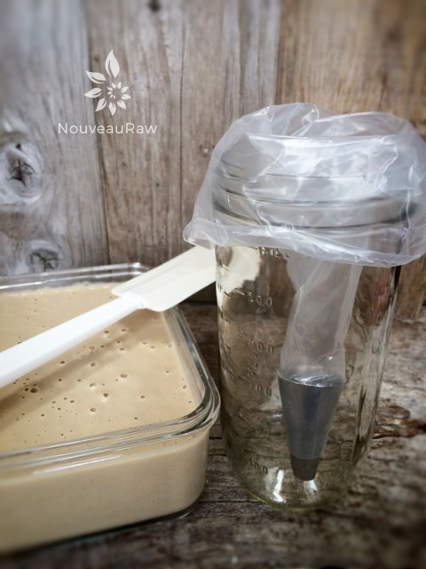
-
Slide the piping bag into the jar and fold the edges of the bag over the rim of the jar. This will help you as you load the bag with frosting.
-
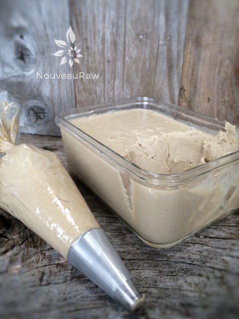
-
Be sure to work out any air bubbles from the piping bag before starting.
-
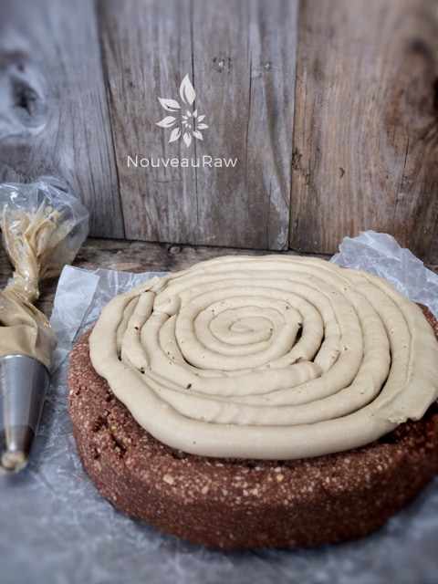
-
Pipe or spread a thick layer of frosting on top of the bottom half of the cake.
-
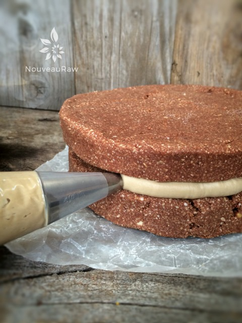
-
Place the top layer of the cake on top and gently press into the frosting. To close up the edging, I piped the frosting around the edge of the cake.
-
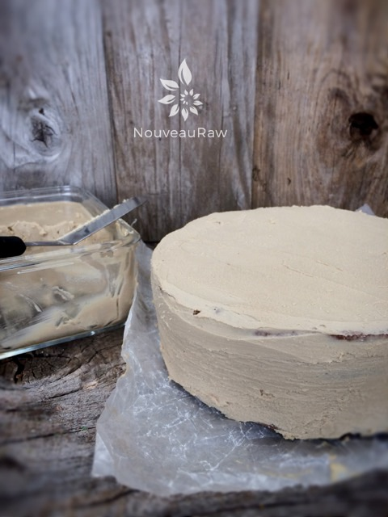
-
Frost the cake with a crumb layer, this doesn’t need to be perfect. Slide into the freezer once done so it can set up nice and firm.
-
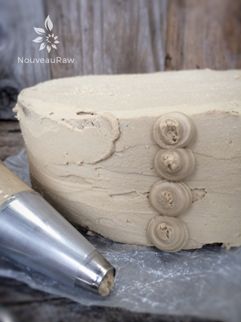
-
Pipe a vertical line of icing dots, about the size of nickel.
-
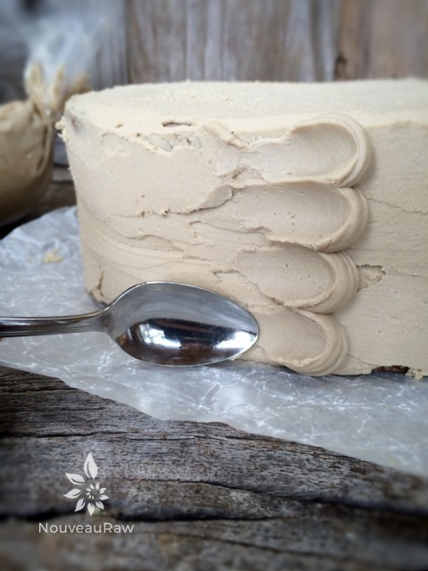
-
Place the small spoon tip in the middle of the dot, press down and drag.
-
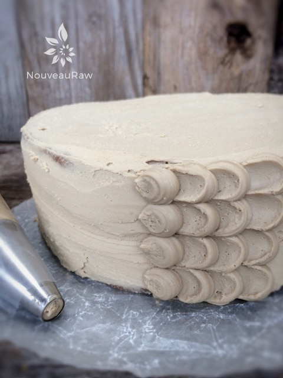
-
Continue this process all the way around the cake.
-
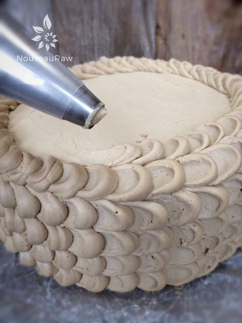
-
Use the same process on the top of the cake, starting from the outside, working inwardly.
-
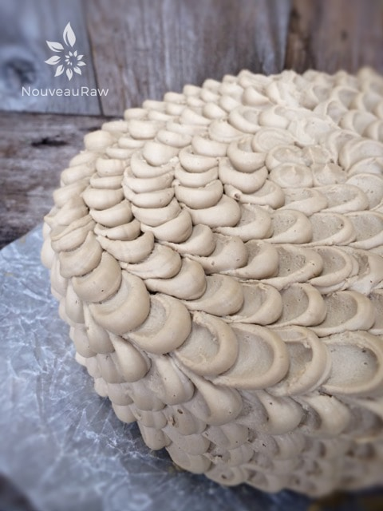
-
The completed look. Sort of reminds me a ruffly pillow. :)
-
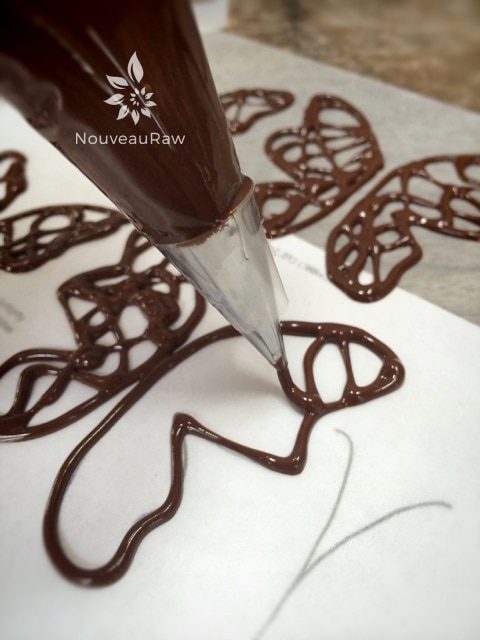
-
Place a piece of wax paper over the template and with a fine tip placed in the piping bag of chocolate… trace the lines of the butterfly. Be sure to connect all lines.
-
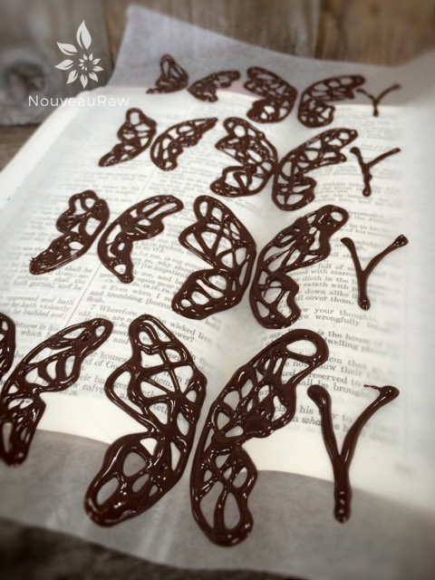
-
To create butterflies with the appearance of movement, carefully lift the wax paper and place the center of the butterfly in the center of an open book. Allow to dry before you move them.
-
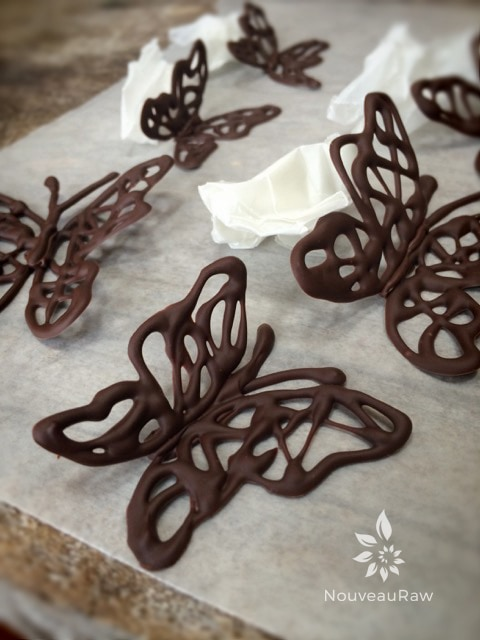
-
Once dry, remove the butterflies. If you need to piece the wings together, think of the chocolate filled piping bag as a glue gun.
-
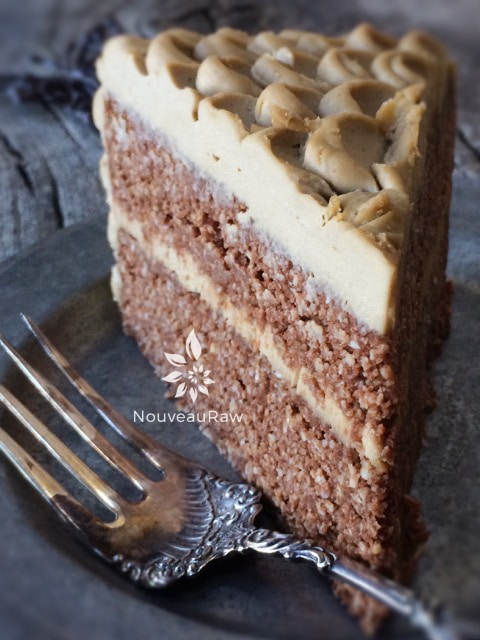
-
This is what it looks like sliced…. full of flavor and nutrients.
© AmieSue.com